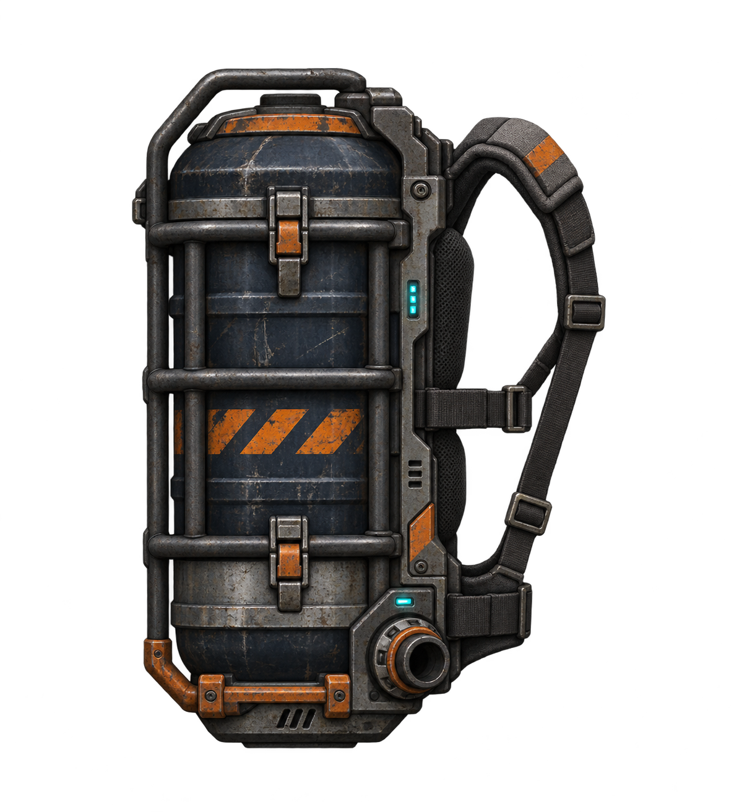
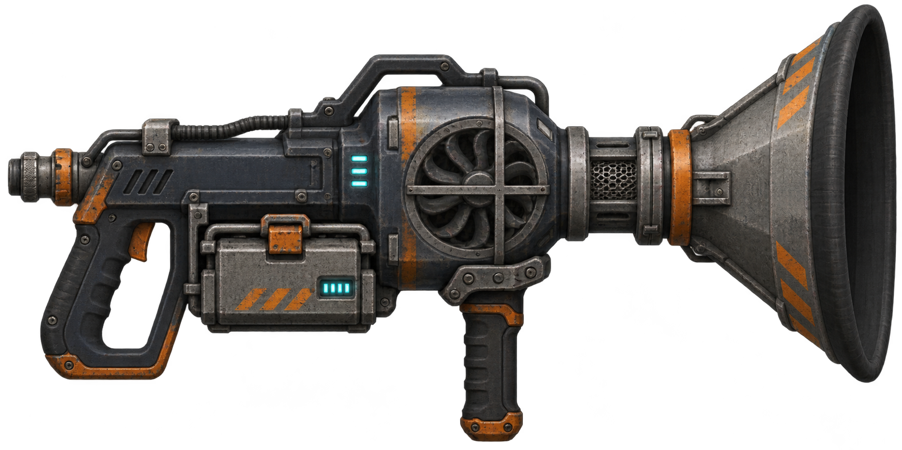

Plecak zbierający

Magazyn łupu, bez baterii.
Dwa osobno wytwarzane przedmioty. Bateria znajduje się w odkurzaczu. Oryginalne grafiki PNG z przezroczystością.

Magazyn łupu, bez baterii.

Wymienne ogniwo zasila zasysanie i rozbiórkę.
Podgląd oryginalnego arkusza 16 klatek. W grze strumień obraca się wraz ze ssawką, a drobiny wskazują drogę pobieranego przedmiotu.